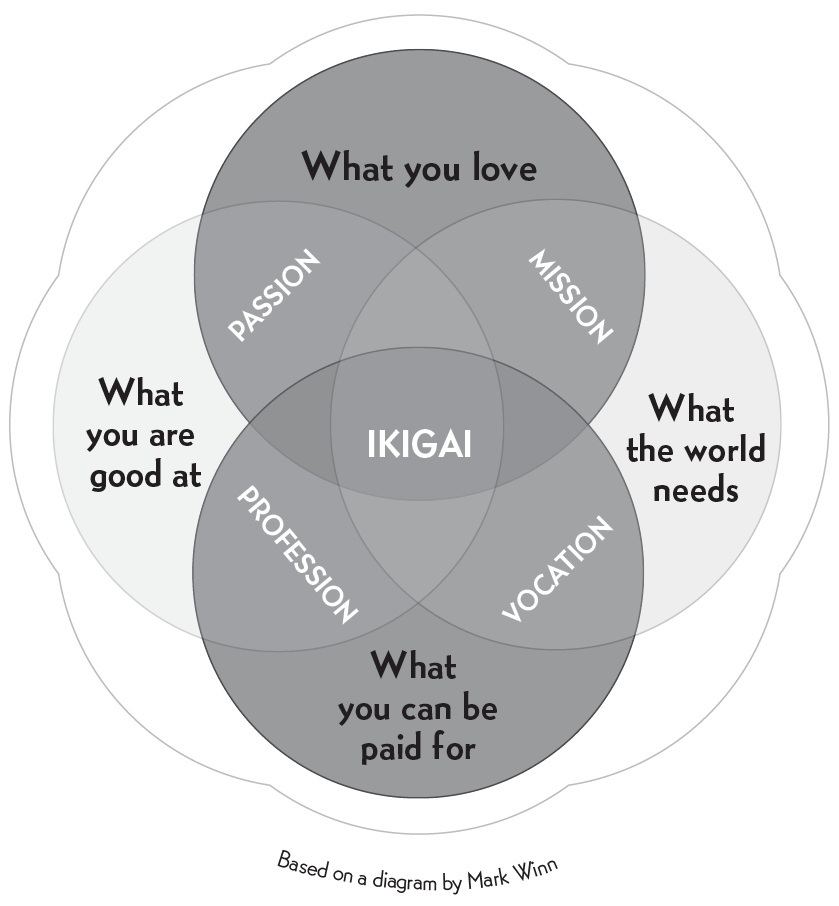

IKIGAI
The art of staying young while
growing old
What is your reason for being?
According to the Japanese, everyone has an ikigai—what a French philosopher
might call a raison d’être. Some people have found their ikigai, while others are
still looking, though they carry it within them.
Our ikigai is hidden deep inside each of us, and finding it requires a patient search. According to those born on Okinawa, the island with the most
centenarians in the world, our ikigai is the reason we get up in the morning.

Whatever you do, don’t retire!
Having a clearly defined ikigai brings satisfaction, happiness, and meaning to our
lives. The purpose of this book is to help you find yours, and to share insights
from Japanese philosophy on the lasting health of body, mind, and spirit.
One surprising thing you notice, living in Japan, is how active people remain after they retire. In fact, many Japanese people never really retire—they keep
doing what they love for as long as their health allows.
There is, in fact, no word in Japanese that means retire in the sense of “leaving the workforce for good” as in English. According to Dan Buettner, a National
Geographic reporter who knows the country well, having a purpose in life is so
important in Japanese culture that our idea of retirement simply doesn’t exist
there.
The island of (almost) eternal youth
Certain longevity studies suggest that a strong sense of community and a clearly
defined ikigai are just as important as the famously healthful Japanese diet—
perhaps even more so. Recent medical studies of centenarians from Okinawa and
other so-called Blue Zones—the geographic regions where people live longest—
provide a number of interesting facts about these extraordinary human beings:
Not only do they live much longer than the rest of the world’s population, they also suffer from fewer chronic illnesses such as cancer and heart disease; inflammatory disorders are also less common.
Many of these centenarians enjoy enviable levels of vitality and health that would be unthinkable for people of advanced age elsewhere.
Their blood tests reveal fewer free radicals (which are responsible for cellular aging), as a result of drinking tea and eating until their stomachs are only 80 percent full.
Women experience more moderate symptoms during menopause, and both
men and women maintain higher levels of sexual hormones until much later in life.
The rate of dementia is well below the global average.
The Characters Behind Ikigai
In Japanese, ikigai is written as 生き甲斐, combining 生き, which means “life,” with 甲斐, which means “to be worthwhile.” 甲斐 can be broken
down into the characters 甲, which means “armor,” “number one,” and “to be the first” (to head into battle, taking initiative as a leader), and 斐, which means “beautiful” or “elegant.”
Though we will consider each of these findings over the course of the book, research clearly indicates that the Okinawans’ focus on ikigai gives a sense of
purpose to each and every day and plays an important role in their health and
longevity.
The five Blue Zones
Okinawa holds first place among the world’s Blue Zones. In Okinawa, women in
particular live longer and have fewer diseases than anywhere else in the world.
The five regions identified and analyzed by Dan Buettner in his book The Blue
Zones are:
1. Okinawa, Japan (especially the northern part of the island). The locals eat a diet rich in vegetables and tofu typically served on small plates. In addition to their philosophy of ikigai, the moai, or close-knit group of friends (see page 15), plays an important role in their longevity.
2. Sardinia, Italy (specifically the provinces of Nuoro and Ogliastra). Locals on this island consume plenty of vegetables and one or two glasses of wine per day. As in Okinawa, the cohesive nature of this community is another factor directly related to longevity.
3. Loma Linda, California. Researchers studied a group of Seventh-day Adventists who are among the longest-living people in the United States.
4. The Nicoya Peninsula, Costa Rica. Locals remain remarkably active after ninety; many of the region’s older residents have no problem getting up at five thirty in the morning to work in the fields.
5. Ikaria, Greece. One of every three inhabitants of this island near the coast of Turkey is over ninety years old (compared to less than 1 percent of the population of the United States), a fact that has earned it the nickname the Island of Long Life. The local secret seems to be a lifestyle that dates back to 500 BC.
In the following chapters, we will examine several factors that seem to be the keys to longevity and are found across the Blue Zones, paying special attention to
Okinawa and its so-called Village of Longevity. First, however, it is worth
pointing out that three of these regions are islands, where resources can be scarce
and communities have to help one another.
For many, helping others might be an ikigai strong enough to keep them alive.
According to scientists who have studied the five Blue Zones, the keys to longevity are diet, exercise, finding a purpose in life (an ikigai), and forming
strong social ties—that is, having a broad circle of friends and good family
relations.
Members of these communities manage their time well in order to reduce stress, consume little meat or processed foods, and drink alcohol in moderation.1
They don’t do strenuous exercise, but they do move every day, taking walks and working in their vegetable gardens. People in the Blue Zones would rather
walk than drive. Gardening, which involves daily low-intensity movement, is a
practice almost all of them have in common.
The 80 percent secret
One of the most common sayings in Japan is “Hara hachi bu,” which is repeated
before or after eating and means something like “Fill your belly to 80 percent.”
Ancient wisdom advises against eating until we are full. This is why Okinawans
stop eating when they feel their stomachs reach 80 percent of their capacity,
rather than overeating and wearing down their bodies with long digestive
processes that accelerate cellular oxidation.
Of course, there is no way to know objectively if your stomach is at 80
percent capacity. The lesson to learn from this saying is that we should stop eating
when we are starting to feel full. The extra side dish, the snack we eat when we
know in our hearts we don’t really need it, the apple pie after lunch—all these will give us pleasure in the short term, but not having them will make us happier in the long term.
The way food is served is also important. By presenting their meals on many small plates, the Japanese tend to eat less. A typical meal in a restaurant in Japan
is served in five plates on a tray, four of them very small and the main dish
slightly bigger. Having five plates in front of you makes it seem like you are
going to eat a lot, but what happens most of the time is that you end up feeling
slightly hungry. This is one of the reasons why Westerners in Japan typically lose
weight and stay trim.
Recent studies by nutritionists reveal that Okinawans consume a daily average of 1,800 to 1,900 calories, compared to 2,200 to 3,300 in the United States, and
have a body mass index between 18 and 22, compared to 26 or 27 in the United
States.
The Okinawan diet is rich in tofu, sweet potatoes, fish (three times per week), and vegetables (roughly 11 ounces per day). In the chapter dedicated to nutrition
we will see which healthy, antioxidant-rich foods are included in this 80 percent.
Moai: Connected for life
It is customary in Okinawa to form close bonds within local communities. A moai
is an informal group of people with common interests who look out for one
another. For many, serving the community becomes part of their ikigai.
The moai has its origins in hard times, when farmers would get together to share best practices and help one another cope with meager harvests.
Members of a moai make a set monthly contribution to the group. This payment allows them to participate in meetings, dinners, games of go and shogi
(Japanese chess), or whatever hobby they have in common.
The funds collected by the group are used for activities, but if there is money left over, one member (decided on a rotating basis) receives a set amount from
the surplus. In this way, being part of a moai helps maintain emotional and
financial stability. If a member of a moai is in financial trouble, he or she can get
an advance from the group’s savings. While the details of each moai’s accounting
practices vary according to the group and its economic means, the feeling of
belonging and support gives the individual a sense of security and helps increase
life expectancy.
• • •
FOLLOWING THIS BRIEF introduction to the topics covered in this book, we look at a few causes of premature aging in modern life, and then explore different
factors related to ikigai.